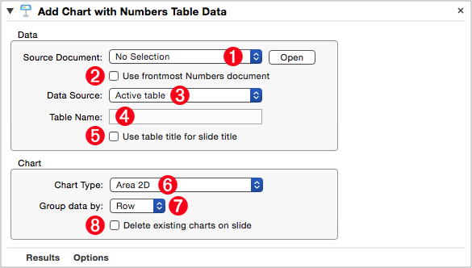
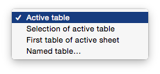
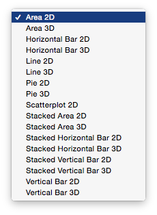

Q: What do you call a business presentation without a compelling chart?
A: A request for early retirement.
In the business world, a lot can be riding on a single presentation. So it has to be convincing and carry impact. And when it comes to dishing decisive data, Apple’s iWork suite of applications serve up the most delicious display of digital daring-do.
The “Add Chart with Numbers Table Data” action makes it easy to insert creative charts, based on data from Numbers documents, into Keynote presentations.
The Action Information
| Input: | An AppleScript reference to the slide to which the chart is to be added |
| Output: | An AppleScript reference to the slide to which the chart was added |
| Parameters: | User-settable parameters include:
|
| Related: | Other actions that often precede this action:
|
Video Overview
The following video (5:23) demonstrates how to use this Automator action:
The Action Interface
The view for this action is divided into two groups:
- Parameters related to identifying the source table data are placed in the top box in the action view.
- Parameters related to determining the chart type and data display method are placed in the bottom box in the action view.
Here is the interface view for the action, with various parameters set to specified options:
(⬇ see below ) The image to be replaced is set be identified by its file name.

1 Source Document File • Select the document file that contains the table whose data is to be used as the source for the created chart. To open the Numbers document file indicated in the source popup menu, click the adjacent “Open” button.
2 Use Open Document • Instead of specifying a Numbers document using the “Source Document File” fie picker 1 select this checkbox to indicate the action should use the frontmost document open in Numbers when the parent workflow is executed.
3 Data Source Menu • Use this menu to indicate how the action determines the source data to used in creating the chart. The four options include: using the data from the currently selected Numbers table; using the selection of the active table; using the first table of the active sheet; or using a table specified by name (⬇ see below )

4 Table Name • If the “Data Source Menu” 3 is set to “Named table…” this text input will be enabled. Enter the name of the Numbers table to used as the data source.
5 Table Name for Slide Title • Select this option to use the table name as the title for the slide that hosts the created chart.
6 Chart Type • Select the type of chart to be created, from this popup menu (⬇ see below )

7 Data Grouping • Select the data grouping method to use for the chart. Options include grouping data: by row; or by column.
8 Delete All Charts • Select this option to delete any existing charts on the host slide. A useful option for updating an existing presentation.